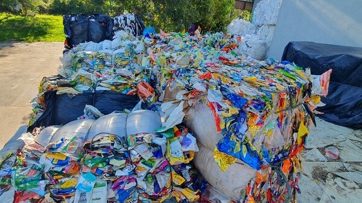

Artigos
Empregabilidade aumenta na área da tecnologia
A empregabilidade na área de tecnologia tem aumentado significativamente nos últimos anos. A demanda por profissionais qualificados nesse campo continua crescendo devido ao avanço rápido da tecnologia e à sua crescente integração em praticamente todos os setores da economia. continuar lendo
Um dos adoçantes mais usados no mundo possivelmente cancerígeno
O adoçante artificial aspartame deve ser classificado pela Apic (Agência Internacional de Pesquisa sobre o Câncer), um braço da OMS (Organização Mundial da Sáude), como "possivelmente cancerígeno para humanos", informaram fontes com conhecimento no assunto à agência de notícias Reuters. continuar lendo
Wi-Fi 7: conheça os principais benefícios da nova tecnologia
A evolução da tecnologia no século XXI, sobretudo, é impressionante. No meio dessa evolução, encontra-se a internet.
Para chegarmos às tecnologias de banda larga e fibra óptica, que conseguem trazer velocidades estonteantes de downloads e uploads, foram muitas décadas de estudo e testes.continuar lendo
Setor de tecnologia: conheça as áreas que estão em alta
A área de tecnologia da informação se tornou estratégica dentro das empresas que buscam inovação e rápido crescimento em um mercado tão competitivo. Conforme a Associação Brasileira de Empresas do setor de TIC– Brasscom, até 2025, a perspectiva é que haja investimento de R$ 510 bilhões em tecnologias de transformação digital. continuar lendo
Cinema japonês contemporâneo ganha sessões gratuitas na Cinemateca Brasileira
Entre os dias 30 de junho e 9 de julho de 2023, a Cinemateca Brasileira e a Fundação Japão, apresentam uma seleção de filmes que destaca a força e a variedade do cinema japonês contemporâneo, exibindo alguns dos maiores sucessos do país nos últimos anos.continuar lendo
Evolução dos Carros
A evolução dos carros ao longo do tempo tem sido marcada por avanços revolucionários em termos de design, tecnologia, desempenho, segurança e sustentabilidade. Aqui estão algumas das principais etapas na evolução dos carros: continuar lendo
China busca vantagem na corrida pelos padrões 6G
A feira comercial MWC Shanghai, que começou na quarta-feira, mostra os avanços em tecnologia móvel da Huawei e outras empresas de telecomunicações chinesas. O país se prepara para tomar a iniciativa de estabelecer os padrões celulares 6G.continuar lendo

É fato que, na natureza, os animais que sobrevivem são os que conseguem se adaptar melhor às mudanças ocorridas ao longo dos anos. A capacidade de evitar predadores e obter alimento são fatores cruciais para a reprodução das espécies. E as formas como essas espécies encontram para se proteger podem, muitas vezes, impressionar. continuar lendo
Zuckerberg vs. Musk: luta pode acontecer em ringue mais famoso do mundo
O site TMZ informou na sexta-feira (30) que o ministro da cultura da Itália entrou em contato com Zuckerberg, dono do Facebook, Whatsapp e Instagram, para sugerir a realização da tão aguardada lutacontinuar lendo
A importância da Reciclagem e os benefícios para o cidadão e o Meio Ambiente

A Reciclagem é importante tanto para o Meio Ambiente, quanto para as pessoas, é uma ação continuada de coleta e processamento de resíduos que de outra forma seriam jogados como lixo; mas que podem ser reaproveitados e transformados em novos produtos.continuar lendo
Notícias Recentes
| Título |
Data |
Visualizações |
| A importância da Reciclagem e os benefícios para o cidadão e o Meio Ambiente |
Davi Richard |
10.000 |
| Empregabilidade aumenta na área da tecnologia
|
João Mendes |
32.000 |
| Cinema japonês contemporâneo ganha sessões gratuitas na Cinemateca Brasileira |
Selma Brandão |
11.000 |
| Setor de tecnologia: conheça as áreas que estão em alta |
Danilo Martins |
60.000 |
| Evolução dos Carros |
Thamires Gama |
25.000 |
| China busca vantagem na corrida pelos padrões 6G |
Manoel Garcia |
19.000 |
| Os 'engenheiros' da natureza e suas habilidades extraordinárias |
Mariana Freire |
51.000 |
| Um dos adoçantes mais usados no mundo possivelmente cancerígeno |
Ana Soares |
42.000 |
| Zuckerberg vs. Musk: luta pode acontecer em ringue mais famoso do mundo |
Felipe Silva |
29.000 |
| Wi-Fi 7: conheça os principais benefícios da nova tecnologia |
Tomas Lima |
18.000 |
Melhores Autores
- Danilo Martins (30 artigos)
- Davi Richard (25 artigos)
- Selma Brandão (20 artigos)
- Manoel Garcia (18 artigos)
- Ana Soares (17 artigos)
- Felipe Silva (16 artigos)
- João Mendes (15 artigos)
- Mariana Freire (13 artigos)
- Thamires Gama (10 artigos)
- Tomas Lima (7 artigos)
Notícias Locais
Os imóveis particulares desocupados na cidade de São Paulo representam 12 vezes o total de pessoas em situação de rua na capital. Os dados são do Censo 2022 divulgado pelo IBGE (Instituto Brasileiro de Geografia e Estatística): são 588.978 domicílios sem moradores na capital paulista, enquanto há 48.261pessoas vivendo nas ruas.
Esportes
O atacante Soteldo está afastado do elenco do Santos. O jogador teve um ato de indisciplina ao longo desta semana e a diretoria do Peixe em conjunto com o técnico Paulo Turra decidiu colocá-lo treinando em separado dos demais jogadores. Com isso, ele não joga neste domingo, contra o Cuiabá, pela 13ª rodada do Brasileirão.
Segundo fontes ouvidas pelo ge, Soteldo não quis treinar depois do jogo contra o Blooming, ainda no vestiário da Vila Belmiro, com os companheiros que foram reservas na última rodada da Sul-Americana. No dia seguinte, pediu para sair mais cedo do treinamento, mas não alegou nenhum problema físico.
Política
Foi em 1º de julho de 1994, uma sexta-feira, há 29 anos, depois de mais de um ano de preparação e transição, que as notas do real passaram a circular pela primeira vez no Brasil e se tornaram a nova — e, até agora, definitiva — moeda oficial do país.
Com o real acabava o cruzeiro, moeda a que substituiu; a sucessão de planos econômicos fracassados que o antecedeu e, principalmente, a hiperinflação.
Em junho, último mês antes da mudança, a inflação do país tinha sido de 47% — em um mês.
Em julho, essa variação caiu para 6,9% e, até dezembro, estava em menos de 2%, pelos dados históricos do Índice de Preços ao Consumidor Amplo (IPCA).
Desde então, a variação mais alta a que o IPCA chegou, em 12 meses, foi de 26%, em 2003. É a metade, em um ano, da variação que teve em apenas um mês naquele junho de 1994.
Atualmente, o IPCA está em 4%. Nos piores momentos, em 1990, a inflação anual brasileira passou dos 6.000%.
Entretenimento
O jogador de futebol Neymar mostrou mais detalhes de sua mansão em Mangaratiba, no Rio de Janeiro. Em férias no Brasil, o atleta compartilhou algumas áreas de lazer em sua propriedade de luxo de 5 mil metros quadrados. Um dos destaques é o cinema open air, em que ele e seus parças e familiares podem assistir a filmes e vídeos sentados em pufes e contemplar o céu.
Depois da vista área da casa ter viralizado nas redes sociais, em especial pela pista de kart na parte externa, Neymar exibiu alguns detalhes do local, mostrando como são os carrinhos de kart, em seu Instagram Stories.
Ele também mostrou que a casa tem um campo de futebol para jogar bola. Fã de esportes, o jogador tem ainda quadra de futebol de areia, quadra de tênis e piscinas para aproveitar os momentos de lazer.
Após a mansão foi centro de polêmicas após uma obra para a construção de um lago artificial de 1 mil m² ter sido interditada por denúncia de crime ambiental, entre as fotos do carrossel com imagens do imóvel, Neymar exibiu suas chuteiras com a mensagem "tudo passa".